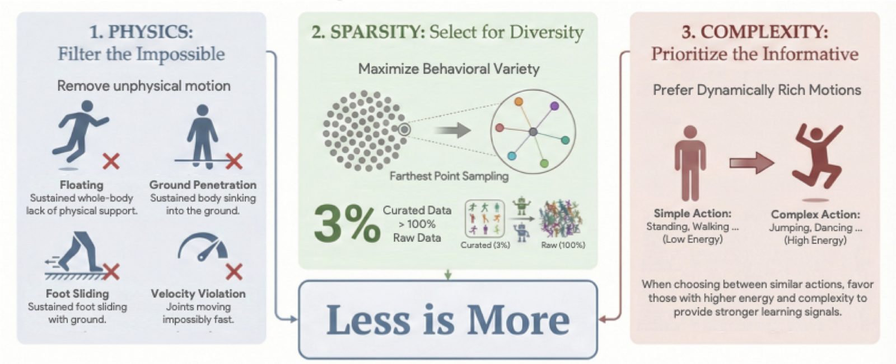
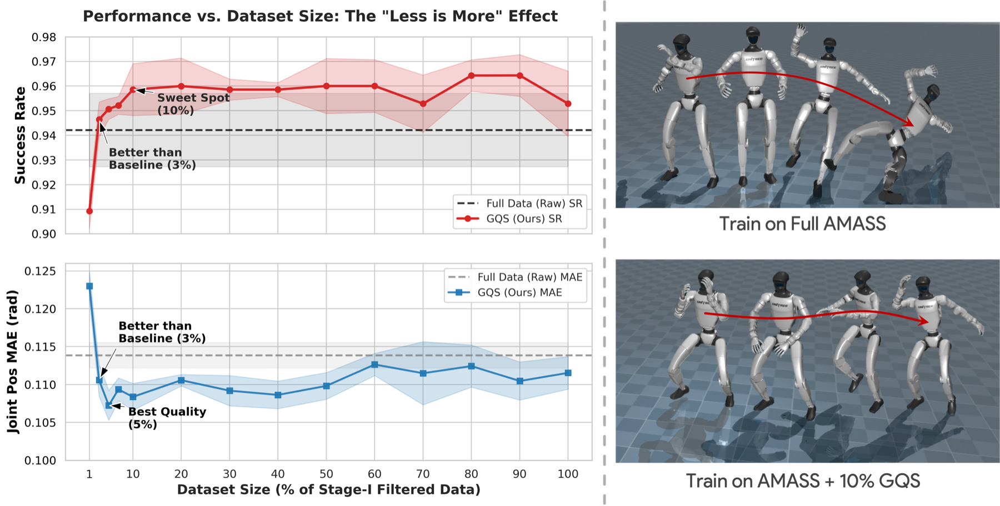
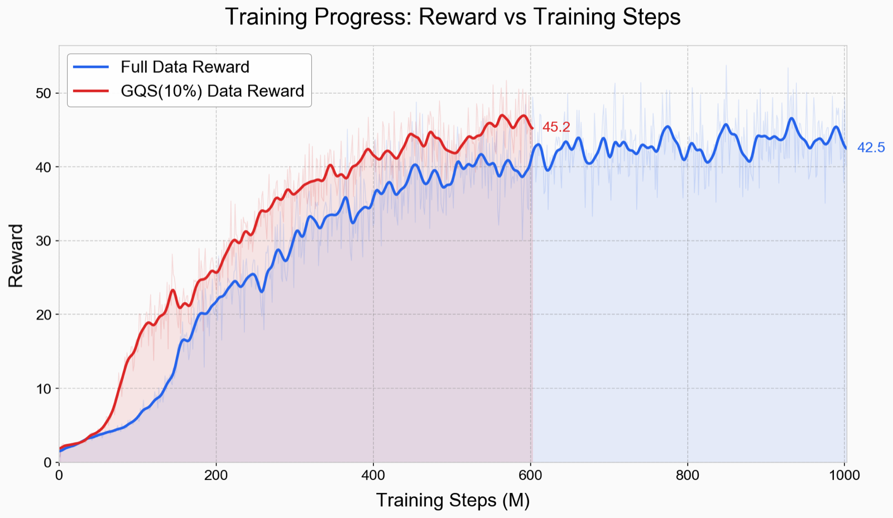
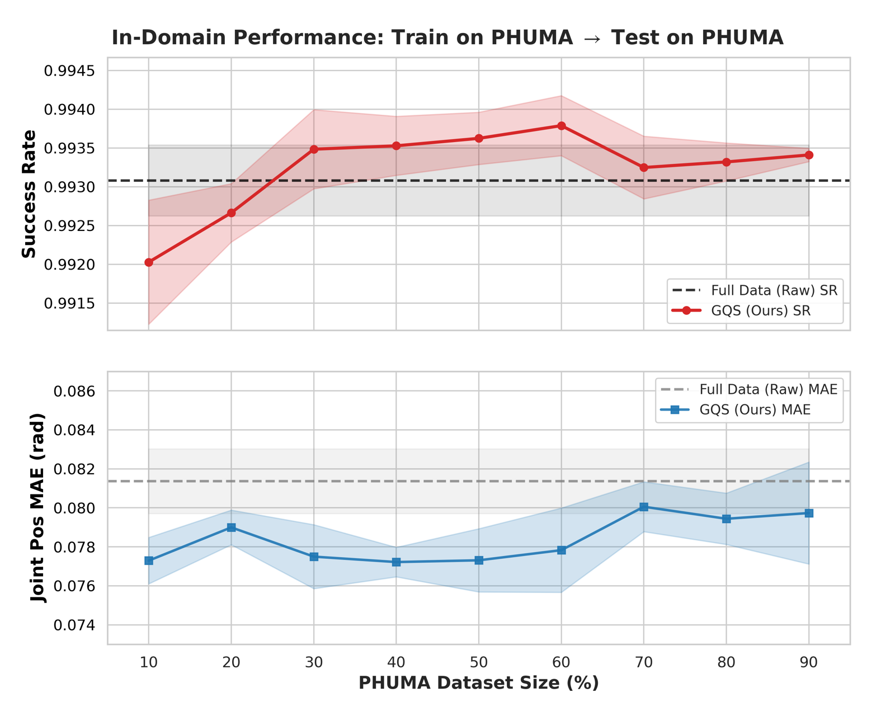
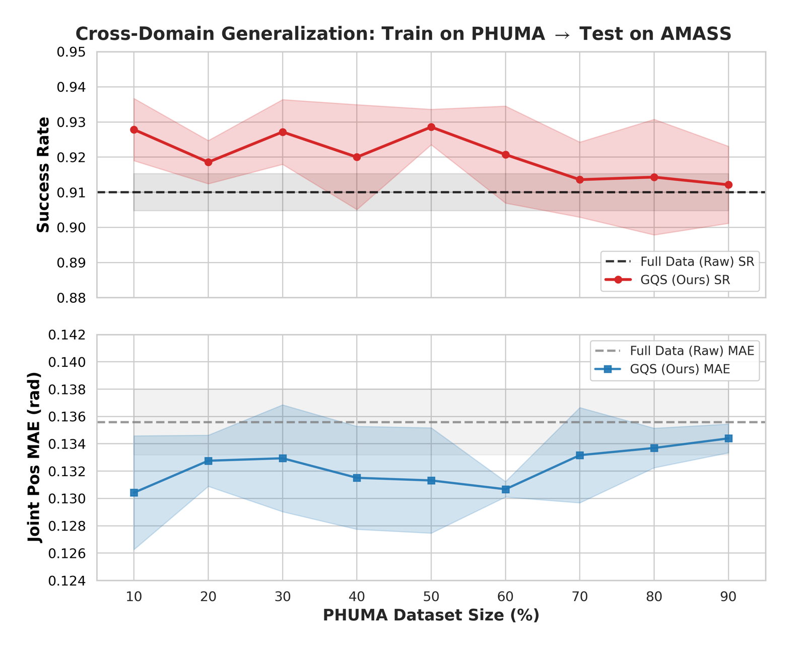
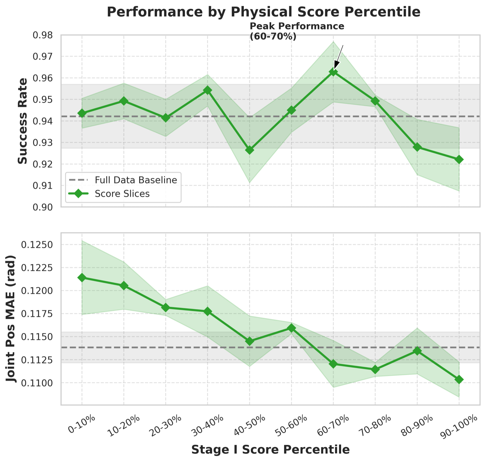
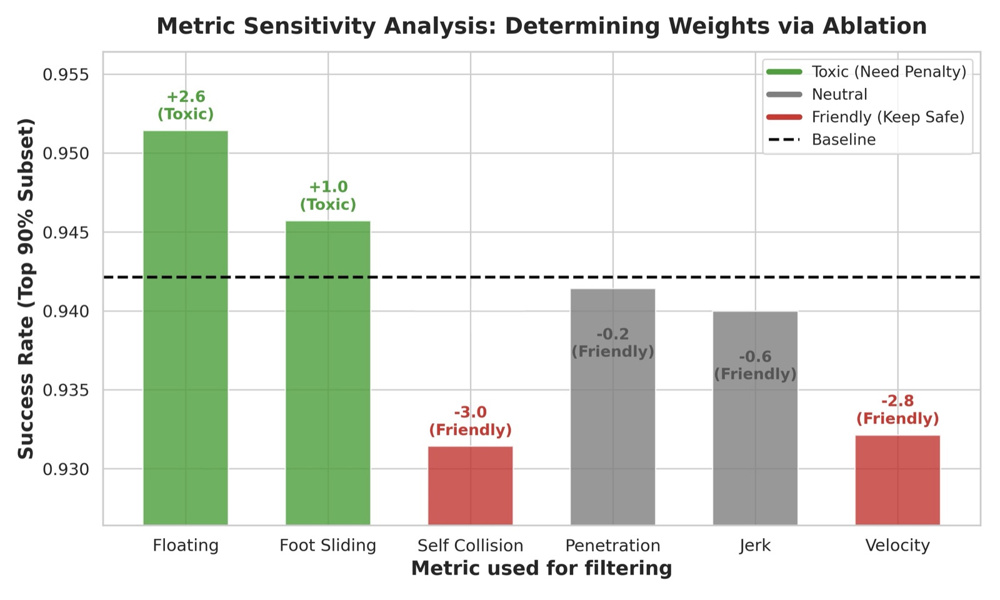
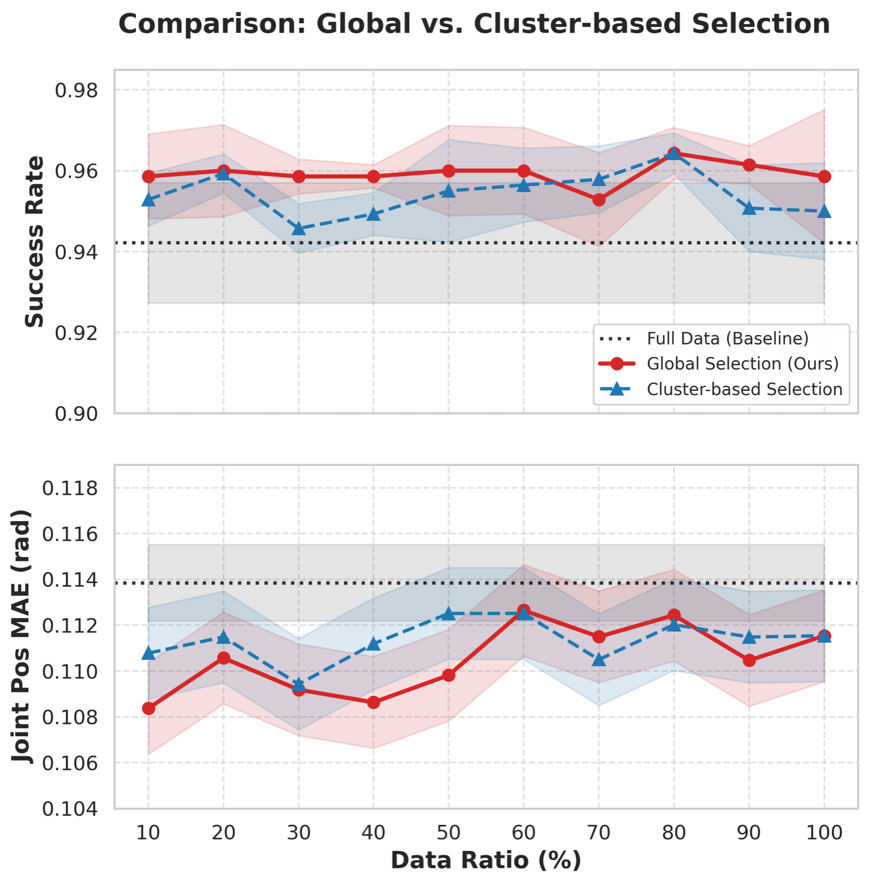
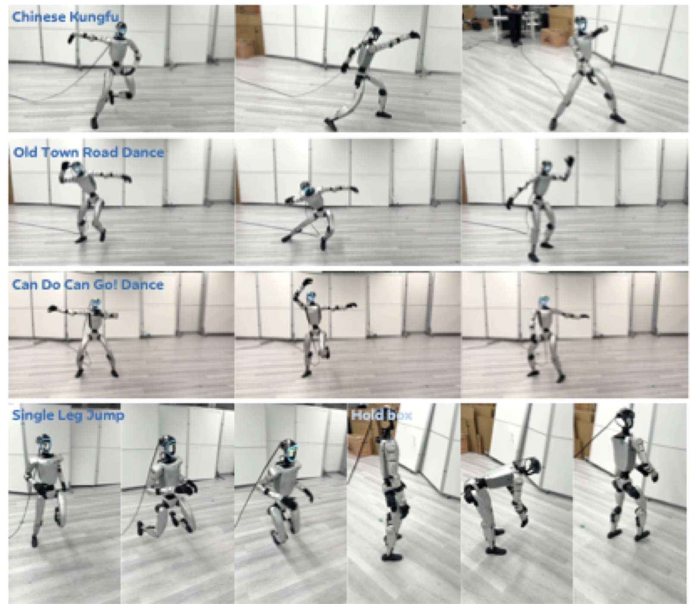

We argue that high-quality motion data can steer tracking policies toward better optimization trajectories early in training. In this work, we introduce LIMMT (Less Is More for Motion Tracking). To our knowledge, this is the first data-centric study for physics-based humanoid motion tracking. We go beyond simply removing low-quality and erroneous clips, but define motion data quality through three dimensions: physics feasibility, diversity, and complexity. We show that even training with under 3% of AMASS yields better tracking performance than training with the full dataset. We further conduct data cleaning on the estimated web-sourced mocap data. Extensive experiments and analyses validate the effectiveness of our framework.

Figure 1. The proposed GQS pipeline. The framework operationalizes motion quality through three stages: filtering physically infeasible data, mapping motions to a semantic latent space, and selecting a subset via complexity-weighted sampling.
GQS is a three-stage pipeline that transforms a large, noisy motion corpus into a compact, high-value training subset. The staged design encodes a key insight: feasibility, diversity, and complexity must be addressed in the right order. Filtering must come first; otherwise physically broken motions can dominate the representation space. Embedding learning must operate on feasible data to define a meaningful semantic manifold. Complexity weighting comes last; otherwise high-energy artifacts may be over-selected.
Sphy. Severe failure modes (extended floating, foot sliding) are heavily penalized; rare or mild signals (self-collision, jerk) receive minimal weights. Motions with Sphy < 90 are discarded.
A, Frequency F, Phase φ, and Offset b. Global descriptor zglobal = mean([A,F]) yields a phase-invariant manifold for diversity-aware sampling.
α · D̂(u,S) + (1−α) · Ĉ(u)
primarily maximizes diversity while preferring dynamically richer motions (higher kinetic energy and acceleration) when candidates are comparable in distance.
Comparison of Success Rate, MPJPE, and MPKPE across different methods and data ratios on the AMASS benchmark. GQS at 3% data outperforms the Full Data baseline across all metrics, while Random 3% causes catastrophic performance collapse — demonstrating that the "less is more" effect is not about using less data per se, but about using the right data.
| Method | Physics Filter | FPS Ratio | Success Rate ↑ | MPJPE (rad) ↓ | MPKPE (mm) ↓ |
|---|---|---|---|---|---|
| Any2Track | × | — | 0.942 ± 0.011 | 0.114 ± 0.003 | 39.24 ± 1.12 |
| Any2Track + Random | ✓ | Random 3% | 0.838 ± 0.018 | 0.159 ± 0.005 | 158.76 ± 14.34 |
| Any2Track + PHC | ✓ | — | 0.948 ± 0.009 | 0.111 ± 0.002 | 36.18 ± 0.98 |
| Any2Track + GQS | ✓ | 100% | 0.954 ± 0.011 | 0.112 ± 0.003 | 34.12 ± 0.95 |
| Any2Track + GQS | ✓ | 10% | 0.959 ± 0.010 | 0.107 ± 0.002 | 30.15 ± 0.81 |
| Any2Track + GQS | ✓ | 3% | 0.956 ± 0.012 | 0.108 ± 0.002 | 29.87 ± 0.76 |
| TWIST2 | × | — | 0.825 ± 0.014 | 0.099 ± 0.003 | 35.80 ± 1.08 |
| TWIST2 + Random | ✓ | Random 3% | 0.649 ± 0.021 | 0.177 ± 0.006 | 263.19 ± 27.87 |
| TWIST2 + PHC | ✓ | — | 0.845 ± 0.012 | 0.096 ± 0.002 | 33.54 ± 0.94 |
| TWIST2 + GQS | ✓ | 100% | 0.843 ± 0.012 | 0.094 ± 0.003 | 31.25 ± 0.89 |
| TWIST2 + GQS | ✓ | 10% | 0.868 ± 0.011 | 0.084 ± 0.002 | 27.21 ± 0.72 |
| TWIST2 + GQS | ✓ | 3% | 0.861 ± 0.013 | 0.092 ± 0.002 | 27.09 ± 0.68 |
We evaluate GQS across data ratios from 1% to 100%. Remarkably, GQS Success Rate crosses the full-data baseline at just 3% data, while tracking error (MPJPE) drops below the baseline around 5%-10%. GQS significantly outperforms the Full Data baseline in both efficiency and quality.

Figure 2. Performance vs. Data Ratio. The red line shows GQS Success Rate crossing the baseline at just 3% data. The blue line shows that tracking error peaks around 5%-10%. GQS significantly outperforms the Full Data baseline in both efficiency and quality.
Component ablation study at 3% data ratio. The full GQS framework achieves the best performance, demonstrating the synergistic benefit of all three components: Physics filtering is critical — removing it drops Success Rate from 95.6% to 91.1%; Diversity is the primary prerequisite; Complexity weighting further refines selection to prioritize informative motions.
| Physics | Sparsity | Complexity | Success Rate ↑ | MPJPE (rad) ↓ |
|---|---|---|---|---|
| × | ✓ | ✓ | 0.911 ± 0.014 | 0.1213 ± 0.001 |
| ✓ | × | ✓ | 0.934 ± 0.009 | 0.1197 ± 0.003 |
| ✓ | ✓ | × | 0.946 ± 0.008 | 0.1079 ± 0.002 |
| ✓ | ✓ | ✓ | 0.956 ± 0.012 | 0.1079 ± 0.002 |
GQS-curated data achieves higher reward and lower tracking error from the early stages of training (before 0.5B steps), confirming that curated data provides cleaner gradients that steer the policy toward better solutions early. The advantage reflects a fundamentally better optimization trajectory rather than merely faster convergence. Cross-domain experiments on PHUMA further show that the 10% subset outperforms the full dataset when transferred zero-shot to AMASS (92.8% vs 91.0% SR).

Figure 3. Training Dynamics. Learning curves comparing GQS 10% against Full Data. We achieve higher reward throughout training, not just at convergence, confirming that data curation improves the optimization trajectory from early stages.

(a) In-Domain Efficiency on PHUMA. The 10% subset achieves lower MPJPE than the full dataset, surpassing the performance ceiling using only 30% of the data.

(b) Cross-Domain Transfer to AMASS. The 10% subset significantly outperforms the full dataset when transferred zero-shot to AMASS (92.8% vs 91.0% SR).
Figure 4. Generalization Analysis on PHUMA.
We sort all motions by physical scores in descending order and divide them into 10 percentile bins. The resulting curve reveals a critical non-monotonic relationship: performance peaks significantly at the 60-70% slice (96.3% SR), where motions strike an optimal balance between physical feasibility and dynamic complexity. Surprisingly, the highest-scoring motions (0-10%) only reach 94.6% SR, suggesting that perfect physical scores often correspond to conservative or static motions lacking dynamic richness. This validates our three-stage design where Stage I functions as a binary filter while Stages II & III identify high-value motions.

Figure 5. Performance vs. Physical Score Percentile. Performance drops at the tail but peaks at 60-70% rather than 0-10%, showing that the physical filter alone doesn't determine training value.
Not all physical violations are equally detrimental to policy learning. We conduct a sensitivity analysis by filtering the dataset on each metric independently, then categorize metrics into three roles based on performance shift. Toxic artifacts (Floating, Foot Sliding) are penalized heavily as harmful noise; Friendly patterns (high Velocity, Self-Collision) receive low weights since violent motions are valuable for learning robust dynamics; Neutral metrics (Penetration, Jerk) act as mild safety constraints.

Figure 6. Metric Sensitivity Analysis. Improvements indicate harmful artifacts that should be penalized heavily, while degradations indicate valuable dynamic motions that should be preserved.
| Metric | Impact | Role | Value | Weight (wi) |
|---|---|---|---|---|
| Floating | +2.6 | Toxic | 0.4133 | 24.19 |
| Foot Slide | +1.0 | Toxic | 5.8716 | 1.70 |
| Penetration | -0.2 | Neutral | 0.050 | 216.62 |
| Jerk | -0.6 | Neutral | 3.6025 | 0.28 |
| Velocity | -2.8 | Friendly | 0.0226 | 44.22 |
| Self Collision | -3.0 | Friendly | 5.8343 | 0.17 |
A common heuristic in dataset curation is to first cluster the data, then sample within each cluster. We compare Global Weighted FPS (selection on the entire manifold) against Cluster-based Selection (K-Means into 20 groups, then sample proportionally). Global Selection consistently outperforms Cluster-based Selection, particularly in the critical low-data regime. We attribute this to the imbalanced nature of motion datasets: easy clusters like locomotion contain massive amounts of data while hard clusters like acrobatics are sparse. Global WFPS acts as an automatic re-balancer, naturally skipping over dense redundant centers and targeting sparse boundaries of the manifold.

Figure 7. Global vs. Cluster-based Selection. Global selection outperforms cluster-based selection by naturally re-balancing the distribution rather than inheriting the original dataset's imbalance.
We deploy our tracker on the physical Unitree G1 humanoid robot. The policy trained on only 10% GQS-curated data achieves successful real-world deployment without any fine-tuning. The deployed policy demonstrates robust tracking across three motion categories: (a) Basic motion for daily and teleoperation, (b) dancing and expressive movements, (c) athletic skills and dynamic motions. This zero-shot transfer validates that our data curation strategy not only improves simulation metrics but also produces policies with better generalization to real-world conditions.

Figure 8. Real-World Motion Tracking. We deploy the policy trained on GQS-curated data (10%) to the Unitree G1 robot. Each row shows a different motion category: (a) Basic motion for daily and teleoperation, (b) dancing and expressive movements, (c) athletic skills and dynamic motions. The policy successfully transfers to the real robot without fine-tuning, demonstrating that GQS-curated training data not only improves simulation performance but also enhances real-world deployment.
We present LIMMT, a data-centric framework for humanoid motion tracking. Our three-stage GQS pipeline filters infeasible motions, embeds them in a semantic space, and selects a compact subset via complexity-weighted sampling. Training on just 3% of curated data outperforms full-corpus baselines. The gains are plug-and-play across trackers and datasets. Motion data is valuable when it is physically feasible, behaviorally diverse, and dynamically rich — not when it merely grows in volume.
@article{limmt2026,
title={LIMMT: Less Is More for Motion Tracking},
author={Guan, Yu and Qi, Zekun and Lin, Chenghuai and Chen, Xuchuan and Liu, Dairu and
Zhang, Wenyao and Wang, Jilong and Yu, Xinqiang and Wang, He and Yi, Li},
journal={arXiv preprint arXiv:2026.xxxxx},
year={2026}
}